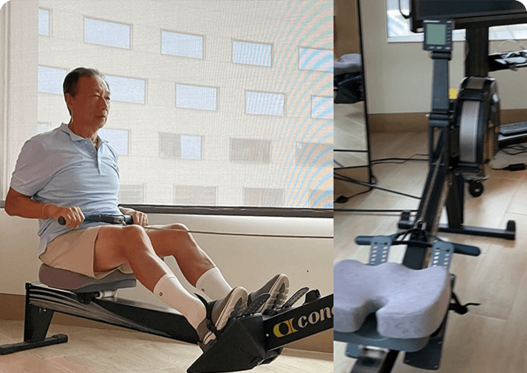

-
慢性病與肌少症相關，家有慢性病長輩怎麼辦？
肌少症不只讓行動力下滑、增加跌倒風險，也會跟著影響心肺功能，增加心血管疾病風險。同時...
-
認識肌少症之後，你認識自己的身體嗎？
「肌少症」越來越被大眾所熟悉，但是你知道自己的肌少症風險嗎？你知道肌少症患者在專業的...
-
每年做健檢，你做「運動檢測」了嗎？
肌肉不只影響我們每一天的行走坐臥，更關乎高齡長輩的跌倒風險，新的醫學研究也發現，肌肉...
-
《桂冠營養研究室》用科學實證打底，把「補充營養」變成享受的事
走入與疫情共存的時代，充足均衡的營養是保護力的根本，但你是否也常感到困擾：不知道自己每天...
-
肌少症5大徵兆檢測！預防肌少症營養、運動3招學起來
「肌少症」是老年失能的兇手，特徵是持續且全身普遍的骨骼肌重量及功能減少，伴隨可能造成...
-
你有肌少症嗎？教你「1動作」快速判斷 3大營養素養肌力
肌少症是中老年人衰弱的危險因子，年輕人也會因為缺少運動、營養不均衡或減肥而缺乏肌肉...
-
50歲以上半數有肌少症風險 有運動就不會肌少症？醫揭3大迷思
台灣家庭醫學會和知名營養品牌合作調查國人肌少症問題，結果顯示有46％的受訪對象有肌少症...
-
日本專家提倡健康長壽3要素，「人際互動」預防衰弱不可忽視
日本高齡化程度全球第一，產學官民傾力推動以「預防衰弱」為主軸的長壽城市。國際間享有盛名...
- 
-
老年人宅在家也要動 4招預防肌少衰弱
鴻海集團創辦人郭台銘，8月為了BNT疫苗赴歐洲催貨，並在月底回到台灣。他近日也在臉書公開自...
-
小重量也能增肌，運動選手的祕密武器「血流阻斷訓練法」肌少症也適用
奧運雖已閉幕，但選手們的飲食和訓練方式持續受到關注和好奇。其中一種名為「血流阻斷訓練法」...
-
長輩預防肌少症 營養師教你這5招
肌少症是高齡健康中最常被忽略的問題之一，許多人都知道要補充蛋白質，或開始運動來增加肌力及...
-
避免肌少症的運動法！健身專家：每週12分鐘、3動作增加肌肉量
50歲後要靠運動增強全身的機能，而肌力訓練是其中最好的投資。許多研究都指出，大人鍛鍊肌力...
-
50歲起就要好好「養肌」 5種高蛋白質創意早餐！
許多大人可能是在吹熄65歲生日蛋糕上的蠟燭、正式跨入銀髮族那一天才想到「健康老」的重要性...
-
男性肌少症盛行率比女性更高！大人更要注意鍛鍊
衛福部發表的統計數字顯示，65歲以上族群的「事故」死亡原因中，第一名是交通意外，接下來就是...